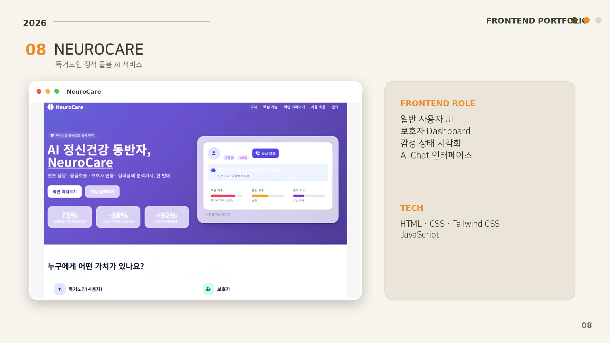
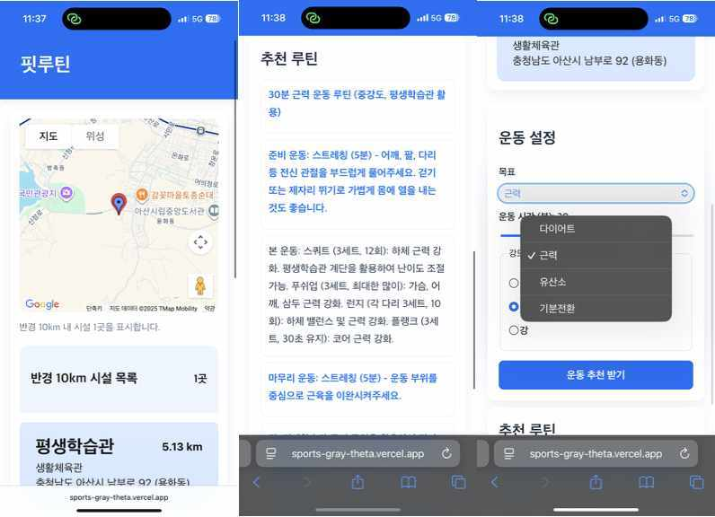
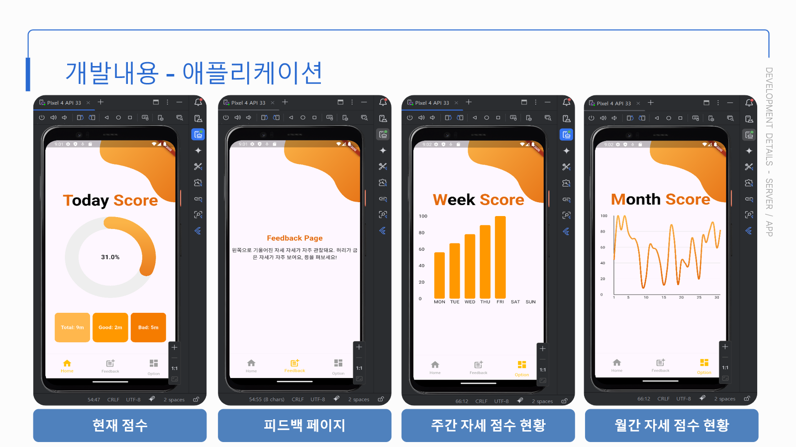
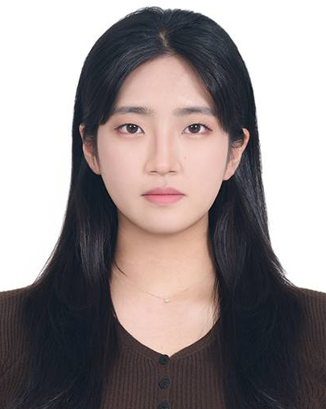

PROJECT 01 · ACCESSIBLE UI구현과 배운 점 보기
NEUROCARE
고령 사용자의 대화 부담을 줄이고, 보호자가 정서 상태를 빠르게 파악하도록 두 사용자의 화면을 연결한 AI 돌봄 서비스
IMPLEMENTED사용자·보호자 UI, 반응형 화면, AI 응답·로딩·오류 상태
MY GROWTH예쁜 화면보다 사용자의 특성과 서비스 상황을 먼저 고려하는 UI 설계
사용자의 문제를 이해하고, 더 직관적인 화면으로 해결하는 프론트엔드 개발자 장세희입니다.
기본 UI 구현에서 시작해 React 상태 관리, Flutter 앱, AI·IoT 데이터 연동까지 프로젝트마다 한 단계씩 구현 범위를 넓혀왔습니다.

결과 화면만 보여주지 않습니다. 직접 구현한 부분과 그 과정에서 프론트엔드 개발자로 배운 점을 함께 정리했습니다.
고령 사용자의 대화 부담을 줄이고, 보호자가 정서 상태를 빠르게 파악하도록 두 사용자의 화면을 연결한 AI 돌봄 서비스

현재 위치에서 갈 수 있는 운동 시설을 찾고, 조건을 입력해 맞춤 루틴을 받는 전 과정을 하나의 앱 흐름으로 연결했습니다.

센서와 AI가 분석한 자세 데이터를 사용자가 이해할 수 있는 점수와 피드백으로 변환한 Flutter 앱입니다.

흩어진 장애인 교육 정보를 목적별로 다시 분류해 원하는 프로그램과 커뮤니티까지 빠르게 이동하도록 개선했습니다.
프로젝트를 반복할수록 단순한 화면 구현에서 상태·데이터·서비스 흐름을 책임지는 프론트엔드로 성장하고 있습니다.
HTML·CSS·JavaScript로 반응형 화면과 기본 상호작용을 만들었습니다.
React에서 지도, 입력, 로딩, 실패, 결과 상태를 하나의 경험으로 연결했습니다.
Flutter와 Firebase로 센서 데이터를 이해하기 쉬운 점수와 피드백으로 표현했습니다.
접근성, 성능, 재사용 가능한 구조까지 고민하며 제품의 완성도를 높이고 싶습니다.

모르는 기능을 빠르게 만드는 것보다, 왜 필요한지 이해하고 다시 설명할 수 있는 코드를 만들고 싶습니다. 사용자의 행동과 팀의 구현 조건을 함께 살피며 매 프로젝트에서 배운 점을 다음 화면에 적용합니다.
새로운 기술을 빠르게 익히되, 사용자가 실제로 체감하는 완성도를 놓치지 않는 개발자가 되겠습니다.